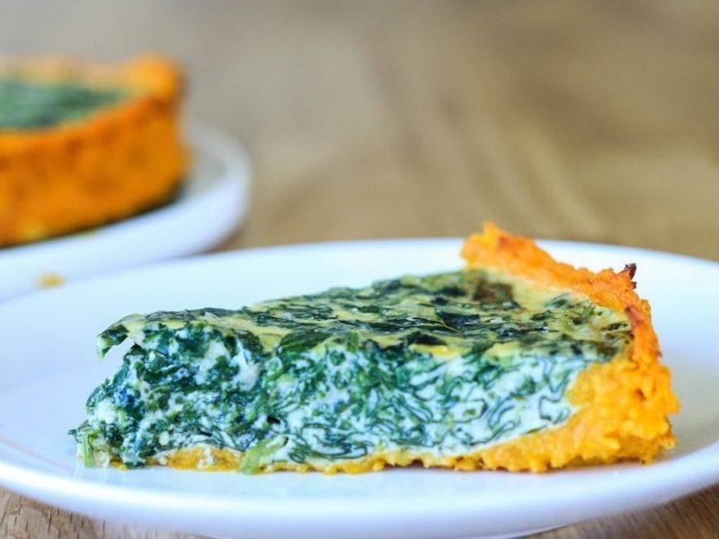
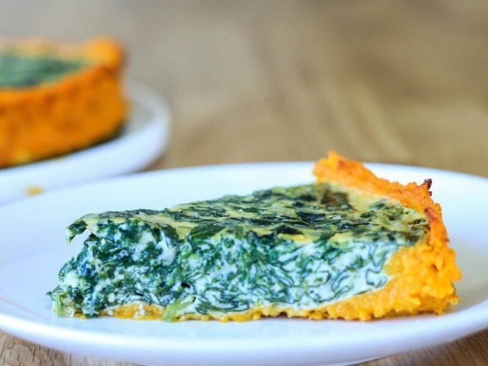

Tarta de espinaca, con base de masa de calabaza (Sin harina)
 

Hacer esta tarta con base de calabaza y sin harina es muy fácil, además vas a obtener una preparación nutritiva que podrás llevar como vianda a tu trabajo a o la escuela de los más pequeños, acompañada con la ensalada fresca que más te guste.
INGREDIENTES:
Para la masa:
- Puré de 1 calabaza.
- 1 zanahoria rallada
- 3 cucharadas de queso rallado.
Para el relleno:
- 2 atados de espinaca.
- 1 cebolla de verdeo.
- 1 taza de queso mozzarella light en cubos.
- 2 cucharadas de queso crema light.
- 2 huevos.
- Sal y pimienta.
PREPARACIÓN:
- Cortar la calabaza en cubos y cocinarla al vapor hasta que al pincharla esté blanda.
- Una vez que esté la calabaza cocida, hacer con ella un puré, añadir una zanahoria rallada y el queso rallado.
- Rocía una tartera con aceite de oliva y cúbrela de a poco con la preparación; incluyendo los bordes.
- Coloca la base en el horno y cocínala por aproximadamente una hora o más, hasta que se haya secado y endurecido un poco.
- Ahora prepara el relleno: cocina la espinaca por unos minutos en agua hirviendo y mézclala con cebolla de verdeo salteada en una sartén con aceite de oliva.
- Añade dos cucharadas de queso crema light, sal y pimienta.
- Bate los dos huevos y agrégaselos también.
- Rellena con esta preparación tu tarta, coloca queso mozzarella light por encima y cocina en el horno hasta que esté bien caliente.
- Retirar del horno…y lista para servir!